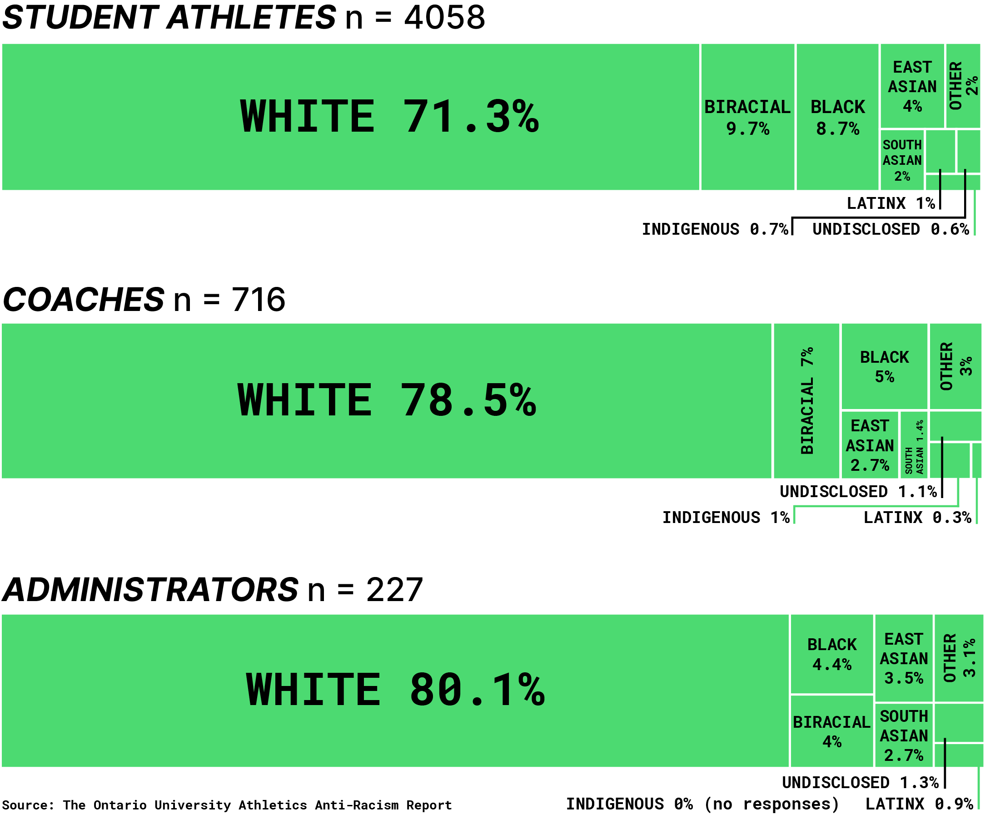
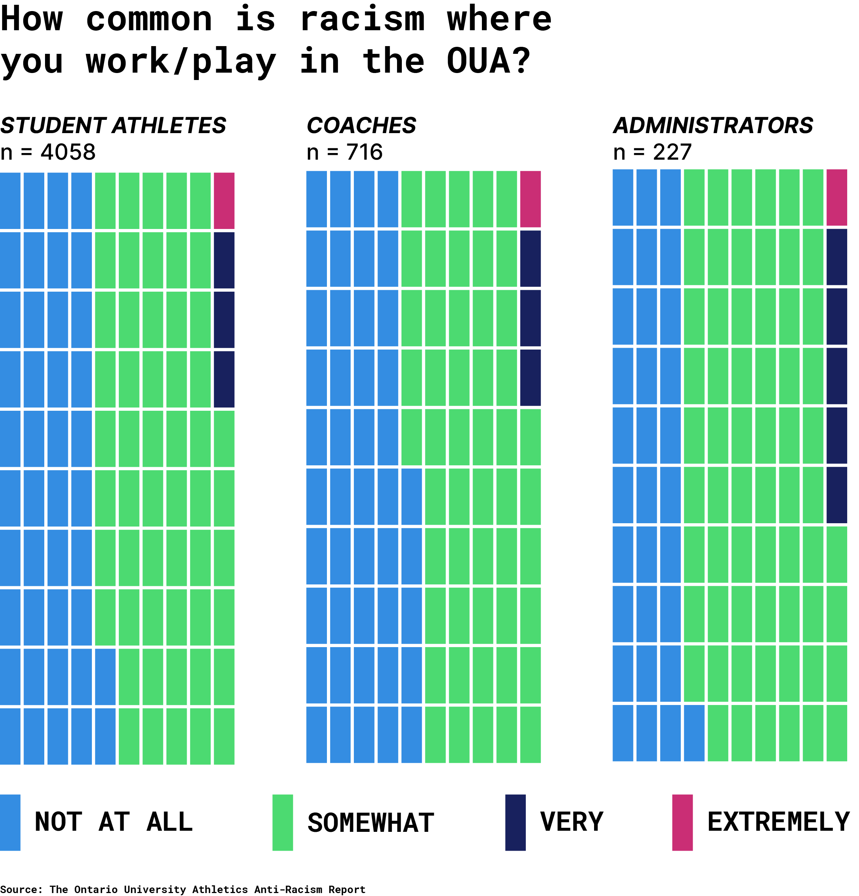

When touring the campus in his senior year of high school, Dashawn Stephens wasn't considering the University of Waterloo as his first choice for university. After all, they had gone 0-8 in Ontario University Athletics (OUA) games the season prior.
Stephens, a wide receiver prospect at the time, had competed with the Toronto Junior Argos from 2014-15 and was being recruited by a number of Canadian university football programs during his senior year.
As he sat with his mom watching the team practice, he scanned the field and did a quick mental count. There were dozens of guys on the turf, but only five of them were Black. As a native of Toronto's Jane and Finch neighbourhood—which has a visible minority population of 74 per cent, according to the City of Toronto—he was shocked.
“I actually did want to go to Waterloo,” says Stephens. “But I was scared to take that jump because I didn’t see people who looked like me.”
Stephens is far from the only Black, Indigenous or person of colour (BIPOC) who felt out of place in the OUA. The league’s OUA Anti-Racism Report found that 71.3 per cent of its student athletes who participated in the census are white. In addition, 48 per cent of BIPOC student athletes reported that they experienced some form of racism during their time in the OUA.
The report breaks racism down into several distinct categories. What most think of as racism, like the use of racial slurs or blatantly racist language, is defined as explicit and overt racism. Other forms of racism mentioned include: microaggressions, discriminatory hiring practices, player (non-)recruitment and assumptions of athlete wealth.
“But, I was scared to take that jump because I didn’t see people who looked like me”
The presence of all these different forms of racism, as well as a lack of diversity in the league years after Stephens’ campus visit to Waterloo, has remained. However, this report was an important first step in creating a more equitable environment in the OUA.
The report’s origins go back to 2020, when the deaths of Ahmaud Arbery, Breonna Taylor, George Floyd and others at the hands of police sparked global outrage, resulting in protests attended by tens of millions in North America, according to The New York Times. Global News reported that two-thirds of Canadians supported the wave of protests and social media activism, the ripples of which were also felt in the OUA.
OUA Chief Executive Officer Gord Grace says the events of summer 2020 were certainly a factor in the conception of the report. “Like everybody, we saw what was going on,” he says. “We thought there was some work that we could do.” The OUA first formed a task force, known as the Black, Biracial, Indigenous (BBI) Task Force. According to Grace, once all initial workshops were concluded, the task force evolved into a formal committee, now known as the BBI Advisory Committee.
Created in 2021, the task force is made up of a combination of student athletes, coaches and administrators with the aim of increasing diverse representation and abolishing systemic racism in the OUA. After partnering with the Indigeneity, Diaspora and Anti-racism in Sport (IDEAS) Research Lab, the OUA started funding the Anti-Racism Report in the fall of 2020.
The report is the result of a survey launched in February 2021, which received 5,001 responses from members of the OUA. One of the report’s senior data analysts, Braeden McKenzie, says the IDEAS Research Lab was pleased with the number of responses they received. He says in order to best represent the population of the conference, it was important to get representation from student athletes, coaches and administrators across all 20 OUA institutions.
The survey states that 4,058 of the responses came from student athletes. However, the population reflected in the census results is predominantly white, even in sports like soccer, that are known for being diverse in other amateur leagues. In the OUA, only 33 per cent of reported soccer players were racialized. In comparison, the Division I National Collegiate Athletic Association (NCAA) demographics database shows that more than half of its soccer players come from racialized backgrounds. The OUA’s Anti-Racism Report also found that BIPOC individuals make up 42 per cent of basketball players in the conference. In the NCAA, that number nearly doubles to 77 per cent.
This begs the question: where’s the gap? How has the NCAA succeeded where the OUA falls short? According to the Anti-Racism Report, money talks. White student athletes in the OUA are reportedly more likely to receive athletic scholarships as well as financial support from relatives.
Former Rams men’s soccer lead assistant coach Kasy Kiarash believes that money is a big part of the problem, but academic barriers play a role in access as well. Kiarash knows about the struggle for athletic success better than anyone. His story defines hustle: he remembers when former director of athletics at Ryerson, Ivan Joseph, told him in 2014 that he didn’t have a job opening or money in the budget for another coach at the moment. His response? “I’ll see you on Monday.”
Kiarash had secured a fund from the government of Ontario and done his research and preparation if the Rams didn’t have the budget to hire him. He says the youth employment fund allowed him to volunteer in his field of study, while the government covered a portion of his expenses and minimum wage base pay.
Kiarash laughs, remembering the shock on Joseph’s face at his persistence. For the first six months, he operated the athletic department’s clothing store and volunteered as a soccer coach. After the new year budget came out, Kiarash says Joseph took a chance on him and gave him an opportunity to be work as a full-time financial analyst and a paid assistant soccer coch.
This type of hustle was nothing new for the Iranian-born Scarborough, Ont. native. Reflecting on the barriers that lead to a lack of diversity in the OUA, Kiarash thought of his own time as a student athlete at York University. He remembers the hour-long bus ride to get to school. He also remembers his reliance on the Ontario Student Assistance Program—if he hadn’t qualified for it, there’s “no way” he would’ve been able to attend university. He explains that scholarships in the OUA are all academic-based, even athletic scholarships. This makes it difficult for students who have financial barriers and are not excelling academically to participate because their focus is working to make oney for their basic needs and pursuing their athletic dream.
“When you look at some of the best players, sometimes they’re not coming to university, because their academics aren’t strong enough or they just can’t afford it.”
A 2015 Toronto study by McMaster University associate sociology professor, Karen Robson, supports Kiarash’s views. It states that “income, race, and gender were intimately linked in confirming the [post-secondary education] confirmation of students.” The study goes on to list Black and Indigenous men as the most disadvantaged in transitioning to university or college from high school.
The maximum athletic scholarship in the OUA is $4,500—only awarded to student athletes who graduate high school with at least an 80 per cent average. At Ryerson, average annual tuition fees range from $7,035 to $11,140 for Canadian students. Add that to the cost of living in downtown Toronto, which can be more than $2,000 a month, according to The Globe and Mail—a $4,500 scholarship doesn’t amount to much.
“When you look at some of the best players, sometimes they’re not coming to university because their academics aren’t strong enough or they just can’t afford it.”
BIPOC students who do enroll in universities still have forces working against them. According to a 2018 study in the Canadian Journal of Psychiatry, racialized people in Ontario are less likely to make use of mental health services than white people. Racialized students say they don’t feel as though therapists understand the intricacies of being racialized with poor mental health, as previously reported by The Eyeopener. The Anti-Racism Report states that it’s no different for student athletes. Nearly 45 per cent of 3,818 respondents reported having experienced racism in mental health services and just 1.6 per cent say they utilized their university’s mental health services to discuss race-related incidents.

Fourth-year Rams men’s basketball player Liam O’Leary-Orange is aiming to change that. Always the youngest in his household growing up, O’Leary-Orange says he felt voiceless at times. It’s apparent in the way he talks; every word is careful and measured.
But as an upperclassman and one of the few returning players on a young Rams team, he says he feels a responsibility to his juniors. His sense of leadership and his memory of that voiceless feeling motivated the six-foot-seven forward to join the committee that acts as a liaison between Ryerson’s student athletes and athletic administrators, the Student-Athlete Advisory Council (SAAC) as an inaugural member in early 2022.
“Later on, I found my voice,” he recalls. “But maybe there’s a rookie on the team that wants to be heard.”
O’Leary-Orange says a big focus of SAAC thus far has been strengthening mental health services for all Rams student athletes.
Not all BIPOC student athletes have experienced racism in the OUA, though. Fourth-year Rams women’s volleyball player Lauren Wong describes her time with the team as some of the best years of her life, despite its unorthodox beginning. After missing recruiting deadlines during her final club season with the Scarborough Titans Volleyball Club, Wong missed her chance to make the Rams roster. She was contacted by NCAA schools and had other options in Canada, but chose to walk on at Ryerson.
Staying close to home and prioritizing her education was more important to Wong than a guaranteed spot on a volleyball roster. Because head coach Dustin Reid had already seen her play, Wong landed the last spot on the team without even having to try out. She didn’t disappoint, getting her career off to a blazing start with an OUA East Rookie of the Year award. Since then, she’s been a conference All-Star and has nothing but good things to say about her time on the team. “There are no boundaries between any of us,” she says. “[Our team] does a really good job in making everyone feel included.”
The Anti-Racism Report mentions that several BIPOC student athletes found it easier to connect with coaches from similar backgrounds to themselves. Coaches can relate on a more personal level to the experiences of the player, which Stephens distinctly remembers experiencing during his time as a student athlete. Over the course of his four-year OUA career, Stephens had just two Black coaches, but they made a long-lasting impact.
“A Black coach will be able to resonate more with me and my journey…the types of systemic racism I may encounter as a young Black man in school, at work,” he says. “I was just able to gravitate to [my Black coaches] better.”
“Maybe there’s a rookie on the team that wants to be heard.”
During Wong’s four years with the Rams, she had a different experience. She says she and her teammates were coached as players on the court and people off the court and weren’t treated differently based on their skin colour or ethnicity.
But with BIPOC individuals making up just 21.5 per cent of the OUA’s coaching population, not all student-athletes get to experience what Stephens recalls so fondly. Kiarash believes this could be due to implicit bias that influences hiring practices. “It’s just this unconscious bias of just going out to recruit [someone who looks like] yourself,” he says. He says this runs deep, especially in people and families in the same culture, especially in minority groups, where there is a sense of trust and familiarity. He says coaches and people have to be aware of unconscious bias when recuiritng players and recruit based on character, not just familiarity. A study in the Journal of Applied Psychology found that implicit bias does play a role in hiring decisions, leading to a lack of diversity in the workplace.
The Anti-Racism Report notes that implicit bias in hiring is certainly a problem in the OUA as well, with several racialized coaches reporting feeling as though their white counterparts have longer leashes and easier paths to success, while they have to jump through more hoops in order to get hired. The report mentions a next step to increasing diversity in the OUA is a combination of training administrators and coaches to ignore their implicit biases and hiring solely based on merit.
Kiarash credits Joseph for being a leader in merit-based hiring practices at Ryerson. He remembers Joseph hiring several BIPOC coaches during his time with the school, most notably Roy Rana, who is now an assistant coach for the Sacramento Kings of the National Basketball Association (NBA).
McKenzie says that OUA schools have been actively looking for ways to improve after the report was released. According to McKenzie, several programs have reached out to the IDEAS Lab to learn how to approach conversations with administrators, coaches and student athletes about anti-racism and increasing diversity. “They really want to engage and plan their next steps carefully.”
The BBI Task Force has already had great success in its early stages, according to Grace. On top of partnering with IDEAS Lab to launch the Diversity Report, the OUA has established the Black or Indigenous Student-Athlete (BIHS) Bursary, anti-racism workshops for league executives and an anti-racism initiative led by OUA football coaches and student athletes.
All of that has happened in the past year. COVID-19 threw a wrench in their plans to progress, but Grace asserts that the OUA is far from done.
Planning through the sports hiatus to return to athletics took up a lot of time that he says league and university administrators would’ve instead spent focused on increasing diversity and combatting racism in the league. However, with restrictions lifting and the pandemic seemingly in the past, Grace has big expectations for the future of the league. He plans to address the Diversity Report and the issues it’s raised at what’s known as the OUA Congress in May, which is to be the first face-to-face meeting with OUA administrators and university athletic directors in two years.
“If you come here, I promise you I will look out for you, and have your back, and support you,”
Stephens, still taken aback by the lack of diversity on the field during his visit, remained on the sidelines as he watched the Warriors practice. He recalls feeling nervous and “scared to take that jump.” One of the five Black players he noticed on the turf approached the younger Stephens, sat with him and asked him where he was from.
The player, Richmond Nketiah, was just a young man at the time. He told him that he knew what was going through his mind. He knew that the prospect was looking around, not seeing too many people who looked like him. And then he said something that changed Stephens’ life: “If you come here, I promise you I will look out for you and have your back and support you.”
It was the push he needed. The jump from the familiarity of home to Waterloo was still scary, but he realised that he wasn’t taking the leap alone. Stephens committed to Waterloo for the following year and says he doesn’t regret his decision whatsoever. “He ended up being one of my best friends to this day,” he said of Nketiah. “He never let up on that promise.”
Although it didn’t make his university athletic experience perfect, establishing that connection was an important first step in making Stephens feel at home as a BIPOC student athlete in the OUA.
In the same sense, launching the OUA Anti-Racism Report was an important first step towards combating racism in Ontario university sports. However, it’s exactly that: a first step. There’s still a lot of work to be done, and it won’t happen overnight.
“From the report, to the scholarships, to the campaigns…we’re making progress,” says Grace. “But, at the same time, I know we can do a lot more. That’s what the message is.”